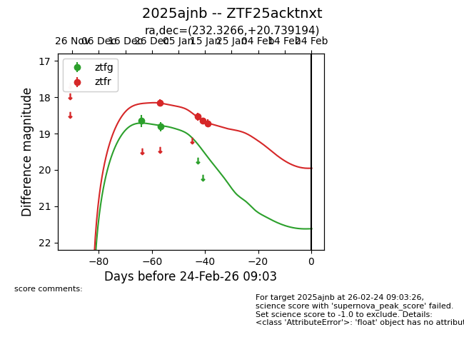
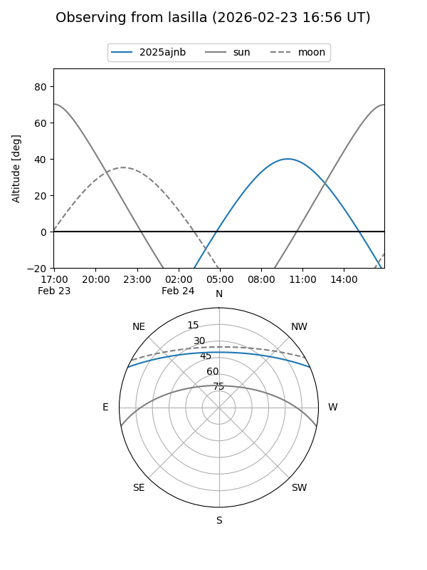
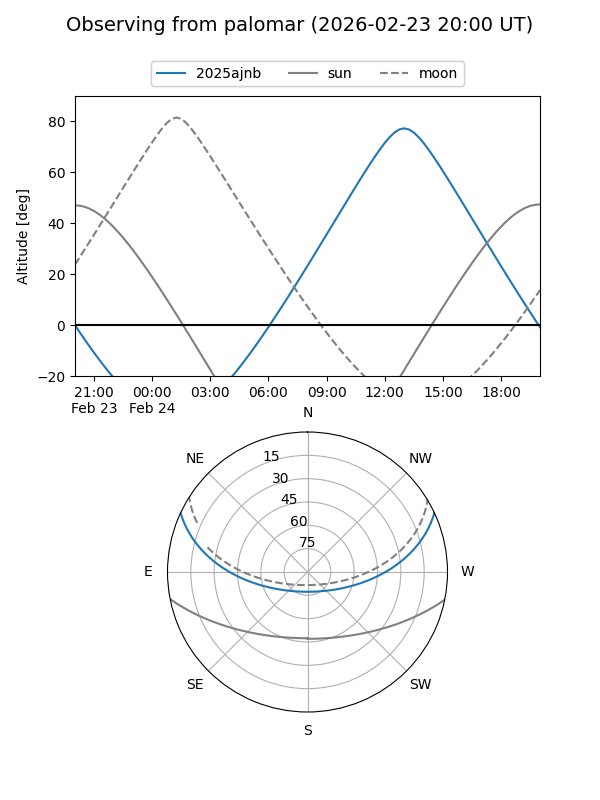

2025ajnb
Target 2025ajnb at 2026-01-12 12:22
Aliases and brokers:
FINK: link
Lasair: link
ALeRCE: link
TNS: link
YSE: link
alt names
ZTF25acktnxt (ztf,fink_ztf)
2025ajnb (tns,yse)
Coordinates:
equatorial (ra, dec) = 232.3266,+20.73919
equatorial (HMS+DMS) = 15:29:18.38,+20:44:21.10
galactic (l, b) = (31.5783,+53.51492)
Flags:
Photometry:
last ztfg=18.81, ztfr=18.54
2 ztfg, 2 ztfr detections
Lightcurve

Visibility


Additional plots